BY GENRE
和食・定食55店
WHY GO
わざわざ行く価値がある店7軒
-
 定食・食堂 渡久地
きしもと食堂(本店)
薪の木灰の上澄み液をかん水代わりに使う戦前からの製法で今も麺を打つ
昼 ¥1,000～¥1,999 夜 ¥1,000～¥1,999
定食・食堂 渡久地
きしもと食堂(本店)
薪の木灰の上澄み液をかん水代わりに使う戦前からの製法で今も麺を打つ
昼 ¥1,000～¥1,999 夜 ¥1,000～¥1,999
-
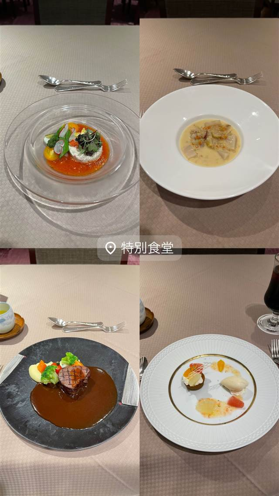
割烹・懐石 三越前駅 特別食堂 日本橋 ルネ・プルー装飾の重要文化財ホールで洋食と寿司を味わえる 夜 ¥4,000～¥4,999 -
 定食・食堂 箱根湯本駅
湯葉丼 直吉
箱根大平台の名水「姫の水」で生湯葉を作り他所では出せない
昼 ¥1,000～¥1,999
定食・食堂 箱根湯本駅
湯葉丼 直吉
箱根大平台の名水「姫の水」で生湯葉を作り他所では出せない
昼 ¥1,000～¥1,999
- 和食 赤坂見附駅 生姜サウナ 金の亀 高知県産生姜を岩塩サウナと水風呂ロウリュ全てに使う独自のサウナ
-
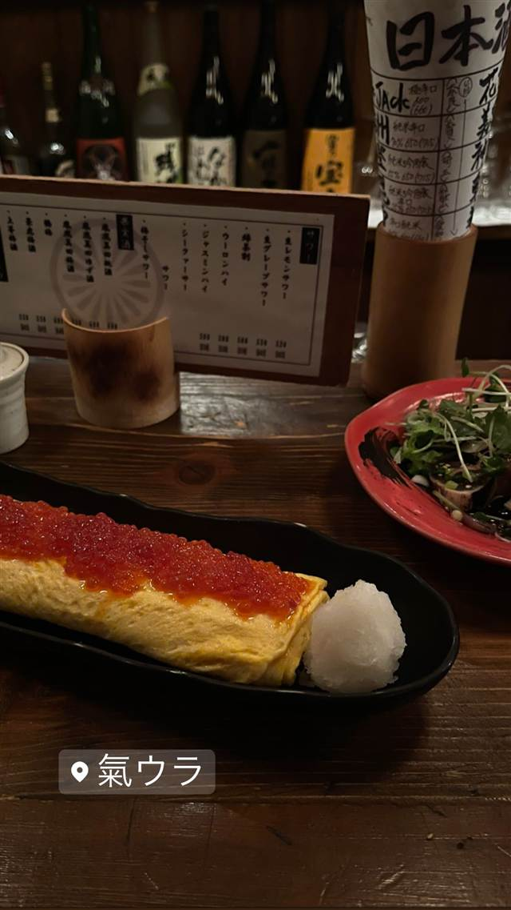
和食 三軒茶屋 氣ウラ 酒屋のような外観から隠し扉を抜ける古民家の空間そのものが魅力 夜 ¥4,000～¥4,999 -
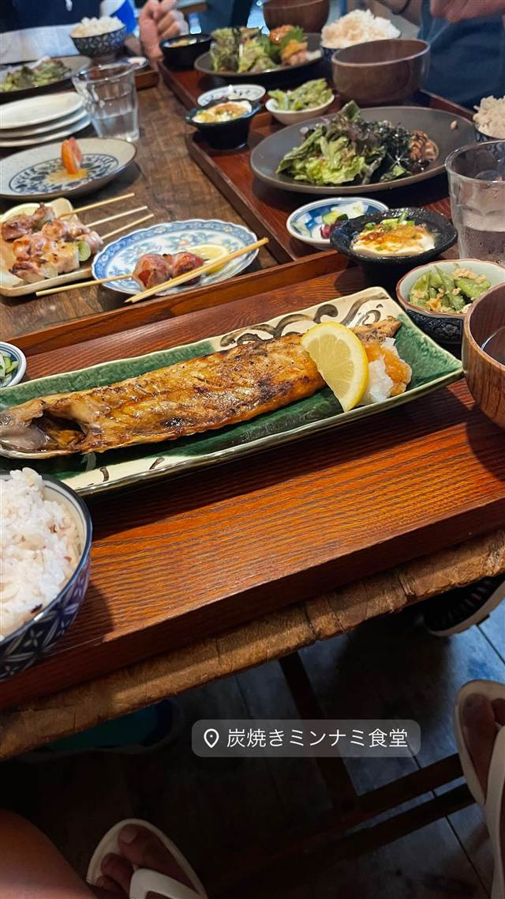
定食・食堂 湘南海岸公園駅(江ノ電)徒歩2分 炭焼き ミンナミ食堂 明治期創業の薪炭問屋だった築100年の古民家をそのまま店舗に使っている 昼 ¥1,000～¥1,999 夜 ¥1,000～¥1,999 -
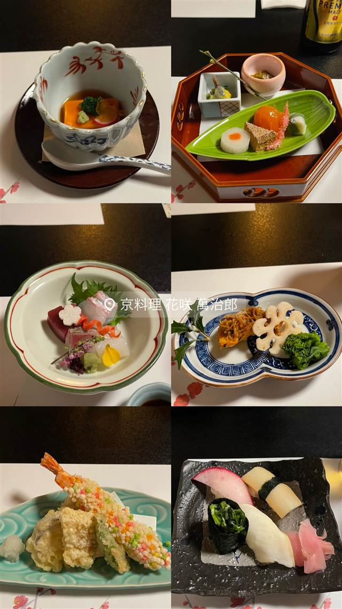
割烹・懐石 祇園四条駅 高台寺 京料理 花咲 萬治郎 築120年の京町家を改装した店舗で会席を提供する祇園花咲グループの一軒
定食・食堂
-
 定食・食堂 秋葉原駅
青島食堂 秋葉原店
新潟・長岡発祥、生姜を効かせた豚骨醤油ラーメン
昼 ～¥999 夜 ～¥999
定食・食堂 秋葉原駅
青島食堂 秋葉原店
新潟・長岡発祥、生姜を効かせた豚骨醤油ラーメン
昼 ～¥999 夜 ～¥999
-
 定食・食堂 四ツ谷駅
かつれつ 四谷たけだ
1935年築地創業「洋食たけだ」の流れを汲む、食べログ百名店の生姜焼き定食
昼 ¥1,000～¥1,999 夜 ¥1,000～¥1,999
定食・食堂 四ツ谷駅
かつれつ 四谷たけだ
1935年築地創業「洋食たけだ」の流れを汲む、食べログ百名店の生姜焼き定食
昼 ¥1,000～¥1,999 夜 ¥1,000～¥1,999
-
 定食・食堂 広尾
麻布食堂
1992年創業、卵たっぷりのオムライスとハンバーグの洋食店
昼 ¥1,000～¥1,999 夜 ¥3,000～¥3,999
定食・食堂 広尾
麻布食堂
1992年創業、卵たっぷりのオムライスとハンバーグの洋食店
昼 ¥1,000～¥1,999 夜 ¥3,000～¥3,999
-
 定食・食堂 五反田
あげ福
ミート矢澤と同じ精肉卸が営む、岩中豚のコロッケ定食
夜 ¥3,000～¥3,999
定食・食堂 五反田
あげ福
ミート矢澤と同じ精肉卸が営む、岩中豚のコロッケ定食
夜 ¥3,000～¥3,999
-
定食・食堂 渡久地
きしもと食堂(本店)
薪の木灰の上澄み液をかん水代わりに使う戦前からの製法で今も麺を打つ
昼 ¥1,000～¥1,999 夜 ¥1,000～¥1,999
-
 定食・食堂 新馬場
レバニラや金太郎 東京出張所
秋田から週末だけ出張してくる発酵レバーのレバニラ定食
昼 ¥1,000～¥1,999 夜 ¥1,000～¥1,999
定食・食堂 新馬場
レバニラや金太郎 東京出張所
秋田から週末だけ出張してくる発酵レバーのレバニラ定食
昼 ¥1,000～¥1,999 夜 ¥1,000～¥1,999
-
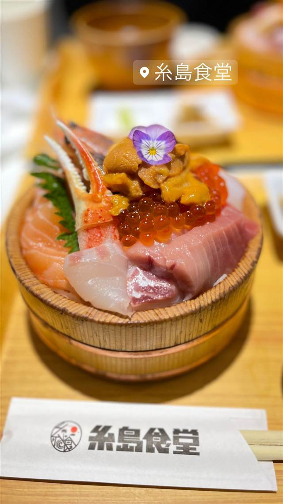
定食・食堂 なし 糸島食堂(本店) 本店限定の踊り食い車海老と活きあわびが並ぶ海鮮丼 昼 ¥2,500～¥3,500 -
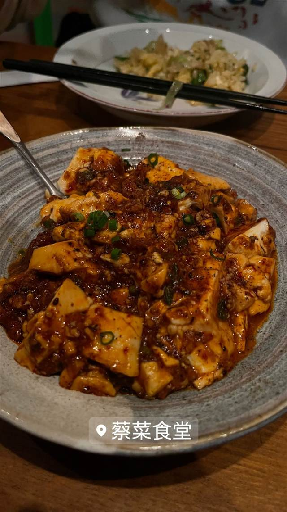
定食・食堂 中野駅 蔡菜食堂（サイサイショクドウ） 孤独のグルメにも登場した上海家庭料理の麻婆豆腐 夜 ¥3,000～¥3,999 -
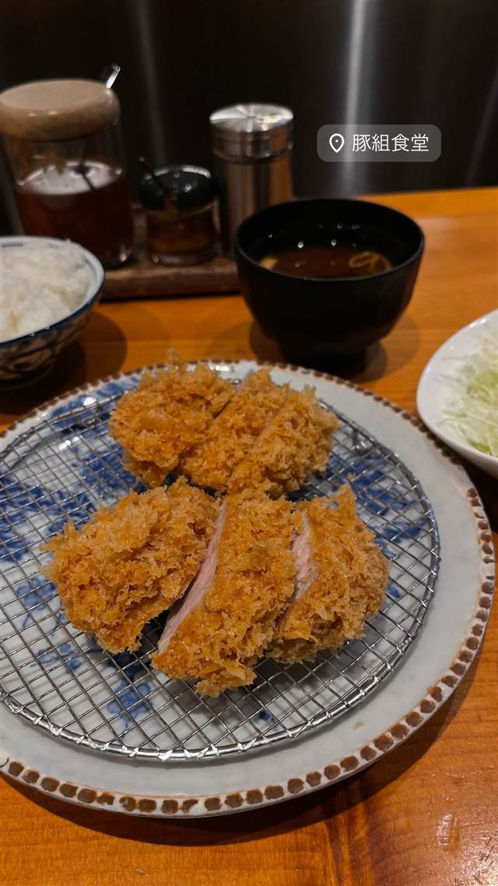
定食・食堂 六本木 豚組食堂 椿ポークなど全国の銘柄豚を日替わりで揚げるとんかつ 昼 ¥1,000～¥1,999 夜 ¥1,000～¥1,999 -
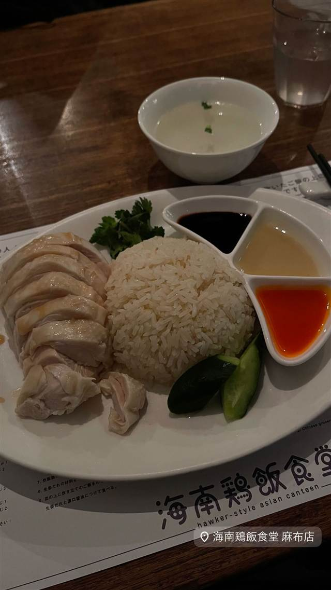
定食・食堂 麻布十番 海南鶏飯食堂 麻布十番本店 既製品に頼らず一から手作りする海南鶏飯のソース 昼 ¥1,000～¥1,999 夜 ¥2,000～¥2,999 -
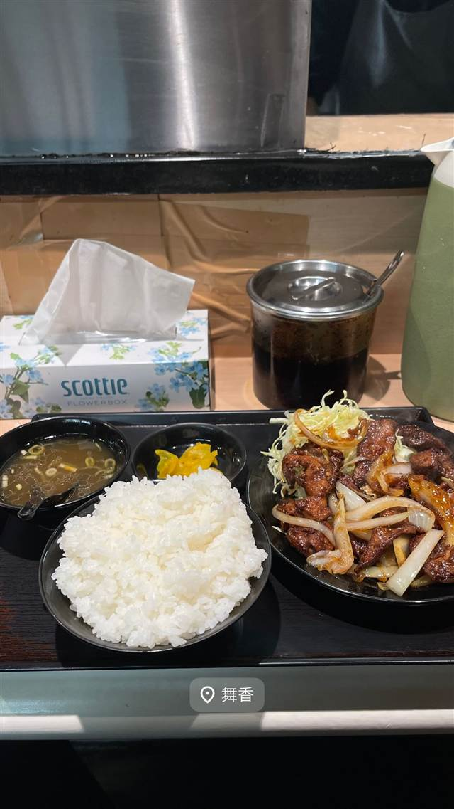
定食・食堂 恵比寿 舞香（まいか） 行列必至の町中華、ご飯の大盛りが無料でシンプルな味の炒飯が評判 昼 ～¥999 夜 ～¥999 -
定食・食堂 箱根湯本駅
湯葉丼 直吉
箱根大平台の名水「姫の水」で生湯葉を作り他所では出せない
昼 ¥1,000～¥1,999
-
 定食・食堂 橋本
よしの食堂
1966年創業、壁一面50種類超のメニューが並ぶ孤独のグルメのロケ地
昼 ～¥999 夜 ～¥999
定食・食堂 橋本
よしの食堂
1966年創業、壁一面50種類超のメニューが並ぶ孤独のグルメのロケ地
昼 ～¥999 夜 ～¥999
-
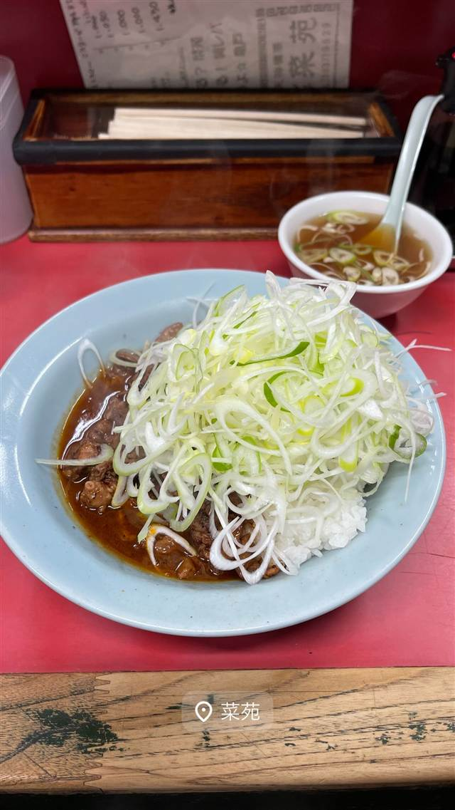
定食・食堂 錦糸町 菜苑 浅草の名店からのれん分け、甘辛レバーに長ネギ山盛りの純レバ丼 昼 ¥1,000～¥1,999 夜 ¥1,000～¥1,999 -
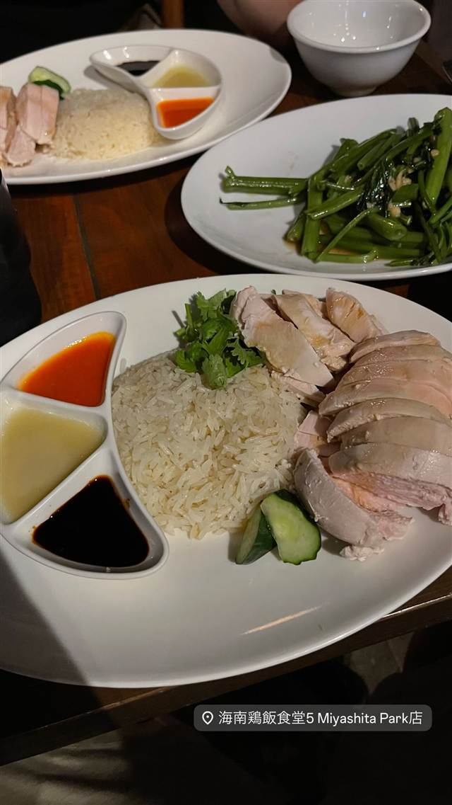
定食・食堂 渋谷 海南鶏飯食堂5 MIYASHITA PARK店 低温調理の鶏肉と鶏油で炊いたご飯に3種のたれの海南鶏飯 昼 ¥1,000～¥1,999 夜 ¥1,000～¥1,999 -
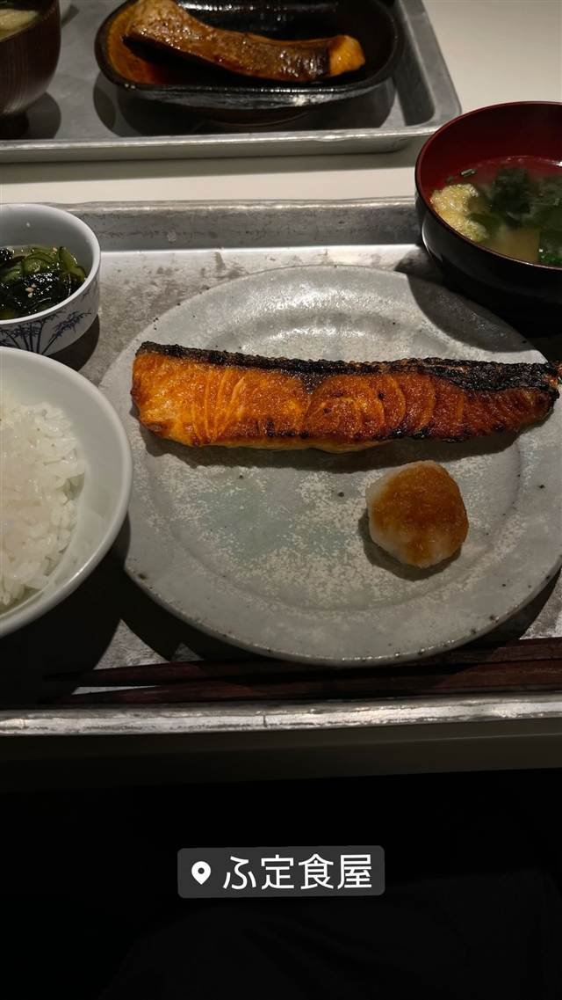
定食・食堂 恵比寿駅(東口) ふ定食屋 店名は「不定食屋」、約30種の小鉢を自由に組み合わせる定食 昼 ¥1,000～¥1,999 夜 ¥2,000～¥2,999 -
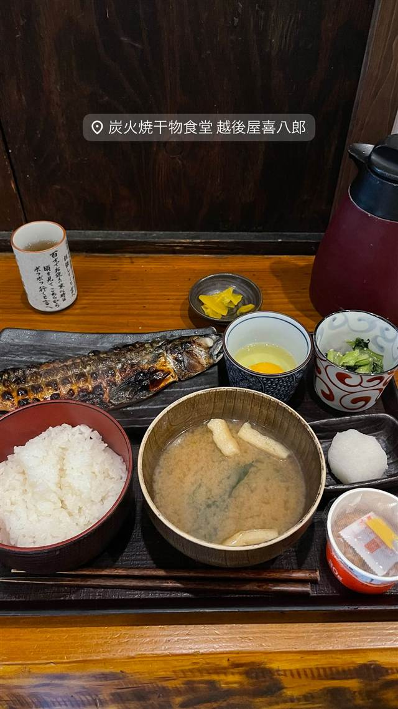
定食・食堂 恵比寿(東口) 炭火焼干物食堂 越後屋喜八郎 備長炭で一気に焼き上げる国内外厳選の干物定食 昼 ～¥999 夜 ¥4,000～¥4,999 -
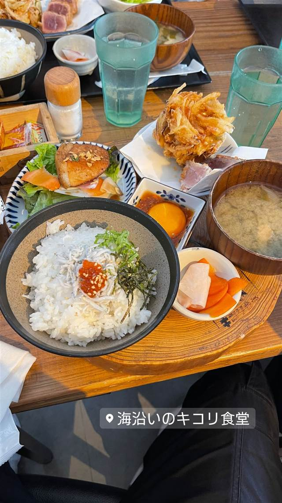
定食・食堂 江ノ電和田塚駅／鎌倉駅 海沿いのキコリ食堂 材木座海岸を望む店で味わう全部のせ切り株定食 夜 ¥3,000～¥3,999 -
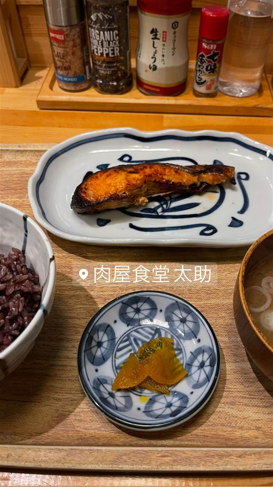
定食・食堂 目黒駅 佰年食堂 太助（旧・肉屋食堂 太助） 肉屋食堂から魚も加え改称、券売機式のサラダバー付き定食 昼 ～¥999 夜 ～¥999 -
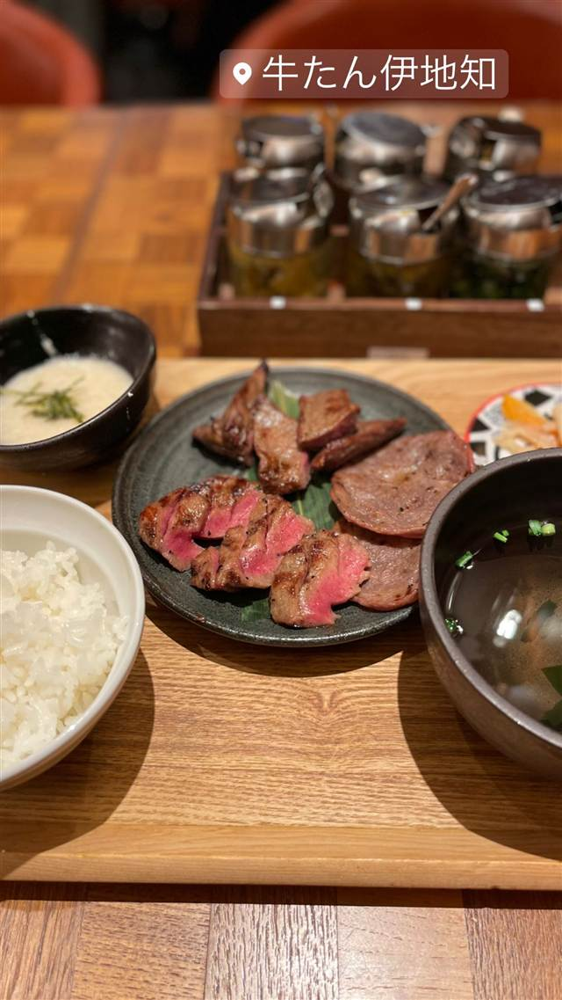
定食・食堂 淡路町駅・新御茶ノ水駅 牛たん 伊地知 御茶ノ水ワテラス店 12日間熟成させた牛たんを一枚ずつ丁寧に焼く定食 昼 ¥1,000～¥1,999 夜 ¥5,000～¥5,999 -
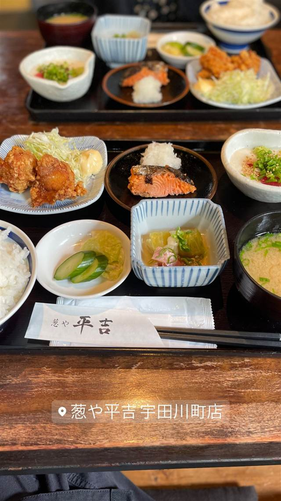
定食・食堂 神泉 葱や平吉 渋谷宇田川町店 宇田川町の路地裏に隠れる、炭火で焼く葱焼き専門店 昼 ～¥999 夜 ¥4,000～¥4,999 -
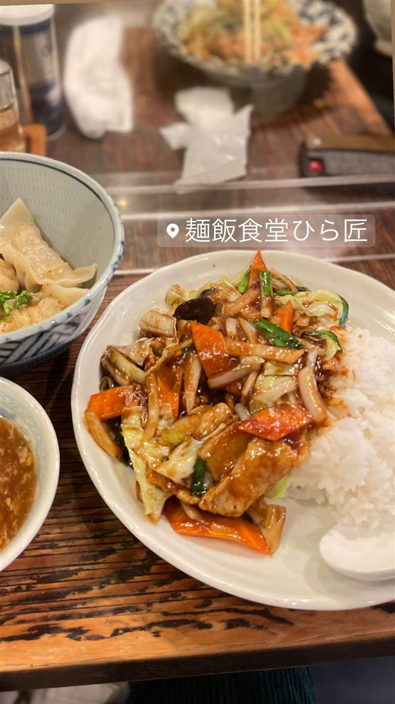
定食・食堂 広尾駅 麺飯食堂 ひら匠 寿司職人から中華の道へ、まかない発の中華屋さんの親子丼 昼 ¥1,000～¥1,999 夜 ～¥999 -
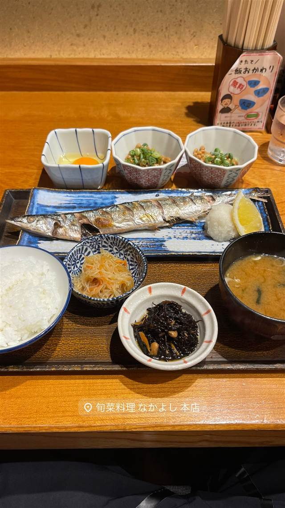
定食・食堂 恵比寿 土鍋炊ごはん なかよし 本店 土鍋で炊いたごはんがおかわり自由、都内11店舗に展開する恵比寿の老舗定食店 昼 ～¥999 夜 ¥3,000～¥3,999 -
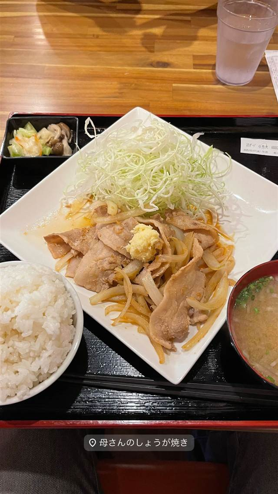
定食・食堂 三島広小路駅 母さんのしょうが焼き 専門店がないという思いから生まれたしょうが焼き定食 昼 ～¥999 夜 ¥1,000～¥1,999 -
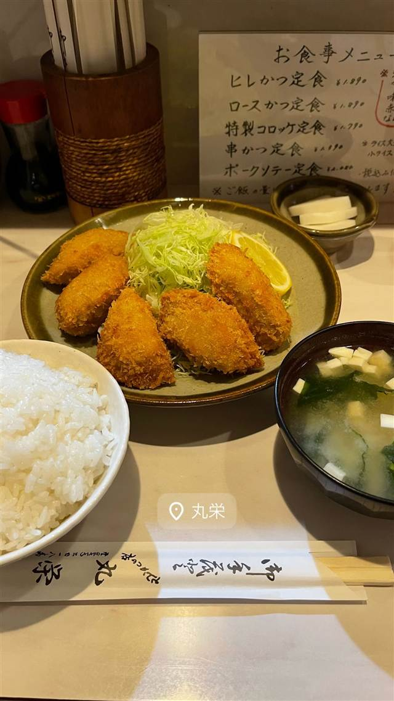
定食・食堂 自由が丘 丸栄 油ではなくラードでじっくり揚げる昔ながらのとんかつ 昼 ¥1,000～¥1,999 夜 ¥1,000～¥1,999 -
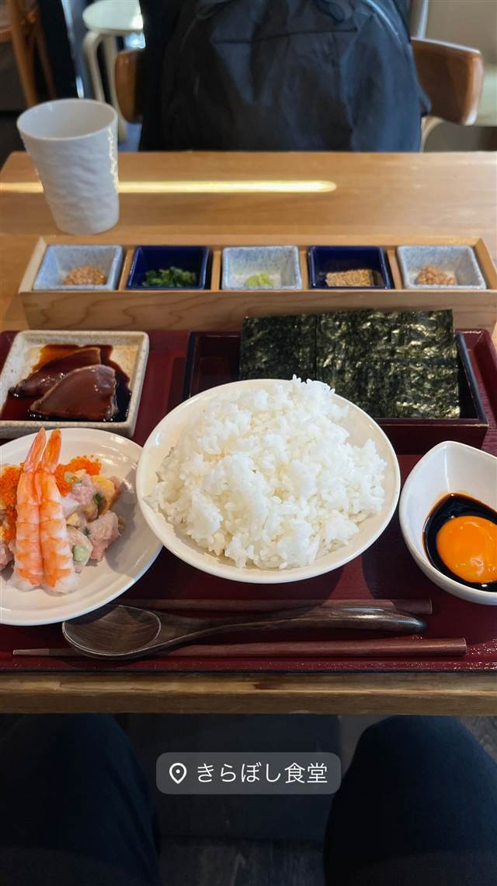
定食・食堂 白金高輪駅 きらぼし食堂 旬の魚介の定食に小鉢2品と漬物、味噌汁が付く 昼 ¥1,000～¥1,999 夜 ¥2,000～¥2,999 - 定食・食堂 湘南海岸公園駅(江ノ電)徒歩2分 炭焼き ミンナミ食堂 明治期創業の薪炭問屋だった築100年の古民家をそのまま店舗に使っている 昼 ¥1,000～¥1,999 夜 ¥1,000～¥1,999
-
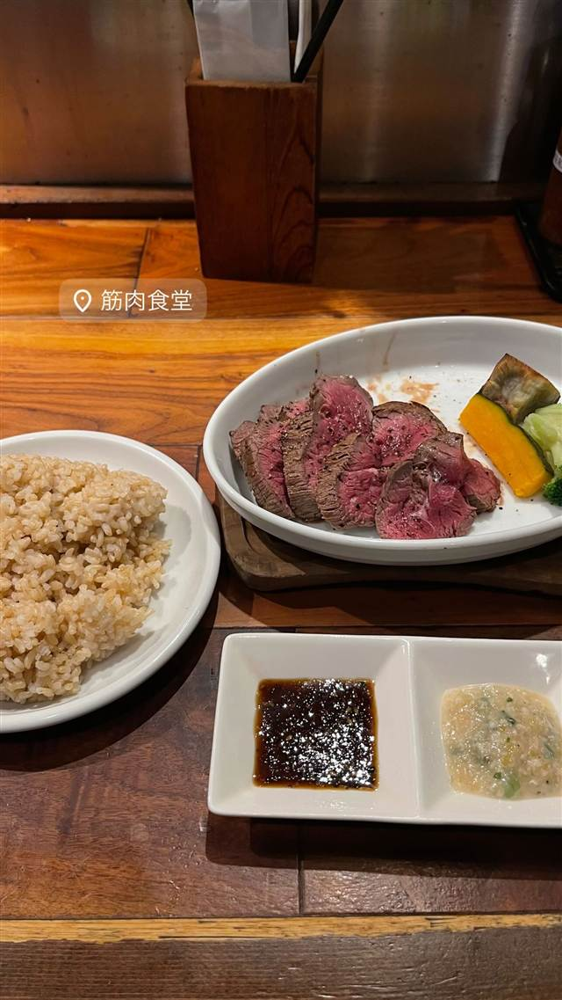
定食・食堂 六本木駅 筋肉食堂 六本木店 つなぎを使わない牛赤身肉のハンバーグで高たんぱく低脂質 昼 ¥1,000～¥1,999 夜 ¥5,000～¥5,999 -
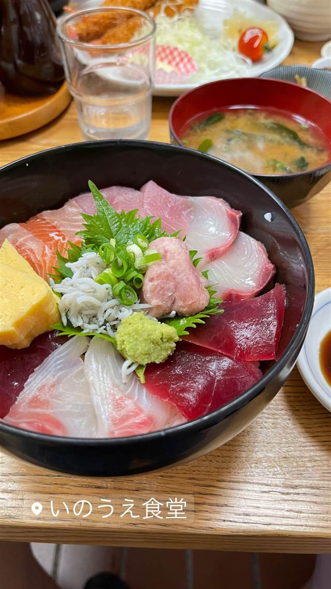
定食・食堂 小田急片瀬江ノ島駅 食堂いのうえ 漁がある日しか味わえない生しらす丼、地物のサザエや伊勢海老が入ることも 昼 ¥1,000～¥1,999 -
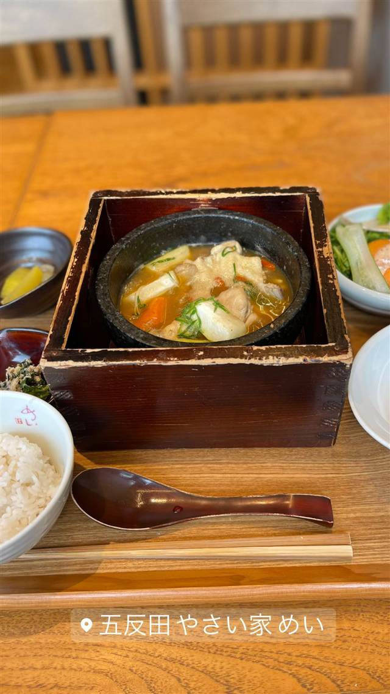
定食・食堂 五反田駅 やさい家めい 五反田東急スクエア店 畑の伝道師が全国50軒の農家から選ぶ野菜のバーニャカウダ 昼 ¥1,000～¥1,999 夜 ¥2,000～¥2,999 -
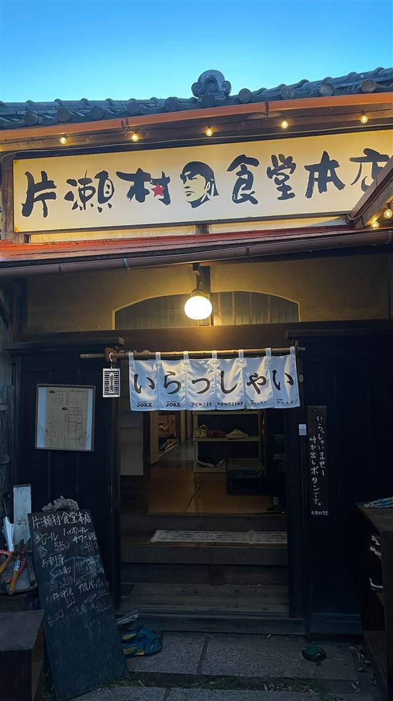
定食・食堂 湘南江の島駅 片瀬村食堂本店 堀りごたつ付きの個室が10部屋ある昭和レトロな食堂 夜 ¥3,000～¥3,999 -
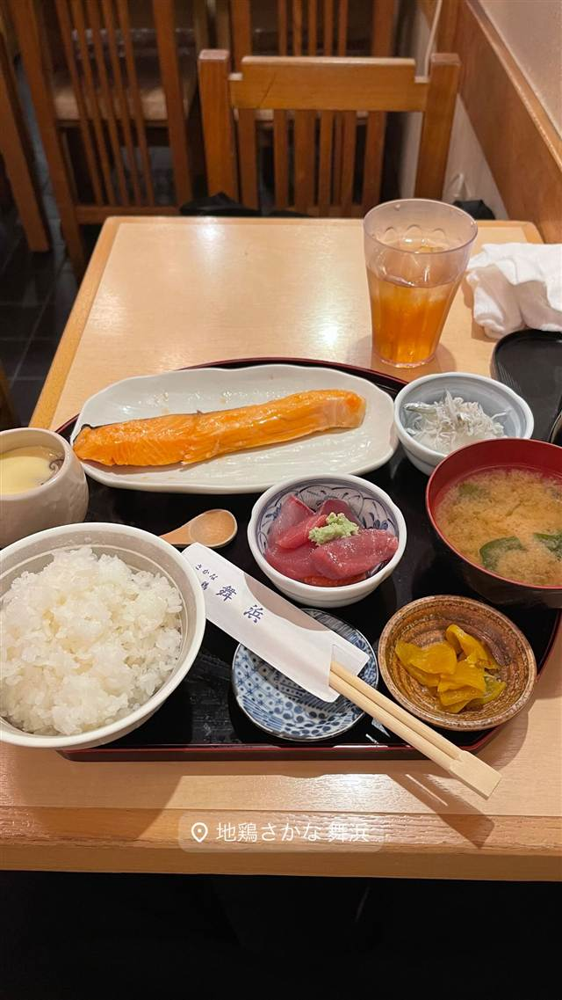
定食・食堂 新橋駅 さかな 地鶏 舞浜 食べログ居酒屋百名店、身がほろりとした焼き鮭定食 昼 ¥1,000～¥1,500 夜 ¥5,000 -
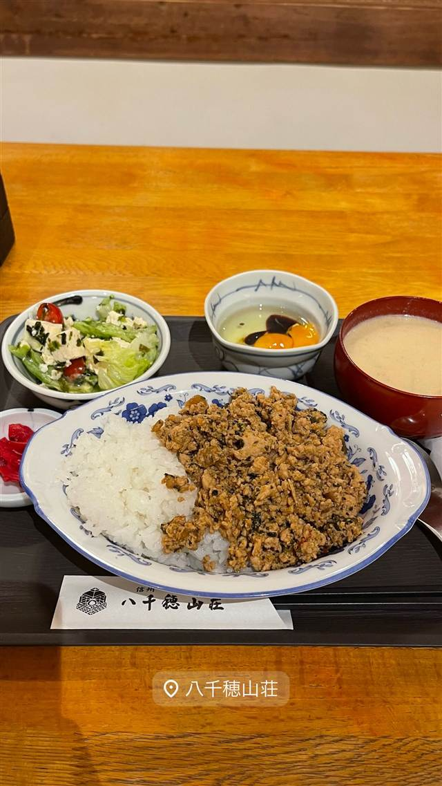
定食・食堂 （バス/タクシー）八千穂駅 八千穂山荘 標高1800mの高原、佐久穂町産スレート石の展望風呂と地元食材の家庭料理
丼
-
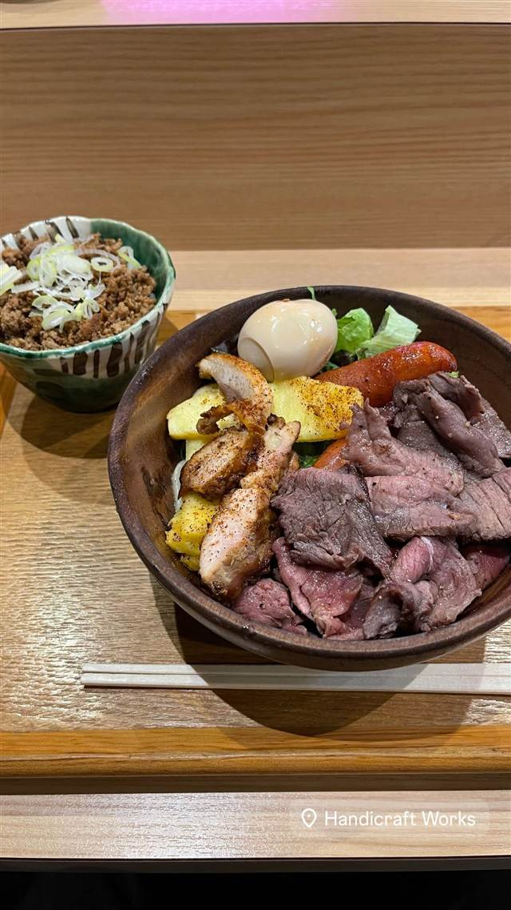
丼 八潮 Handicraft Works（ハンディクラフトワークス）八潮本店 油そばとブラジル料理シュラスコを融合したボルケーノパレット 昼 ¥1,000～¥1,999 夜 ¥1,000～¥1,999 -
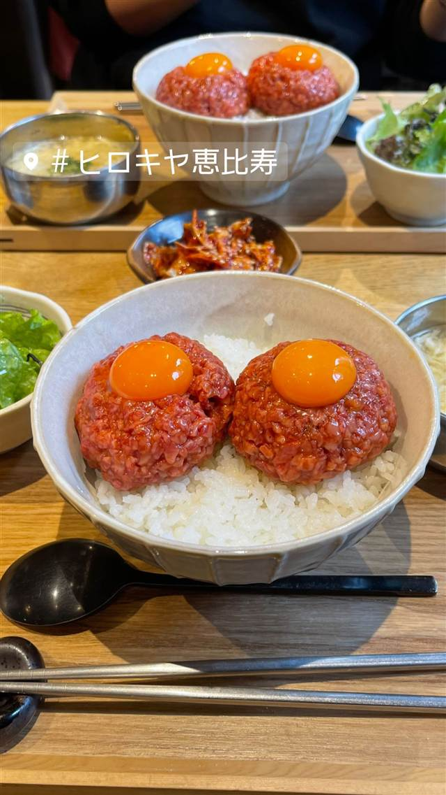
丼 恵比寿駅 #ヒロキヤ恵比寿 DJがプロデュース、1日40食限定の和牛ユッケ丼 昼 ¥1,000～¥1,999 夜 ¥8,000～¥9,999 -
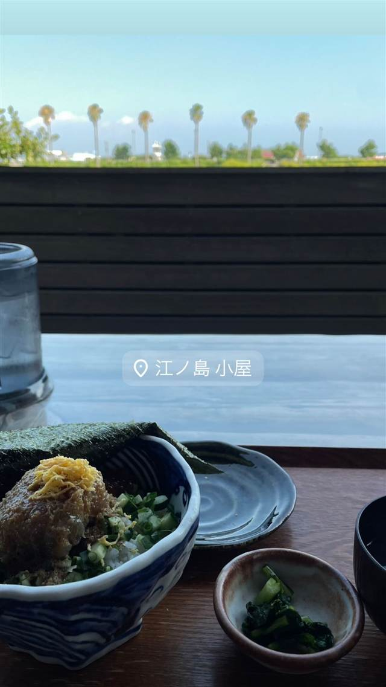
丼 小田急片瀬江ノ島駅 江ノ島小屋 父が漁師で使っていた網小屋を改装した海鮮食堂のまかない丼 昼 ¥1,000～¥1,999 夜 ¥1,000～¥1,999 -
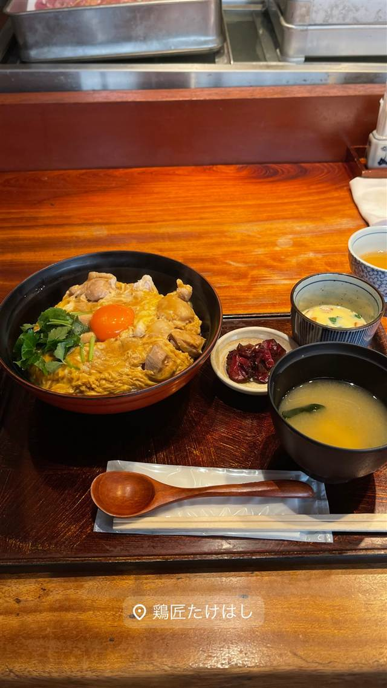
丼 六本木 鶏匠 たけはし 比内地鶏と卵、炊き立てご飯に絡む瞬間を大切にした親子丼 昼 ¥1,000～¥1,999 夜 ¥6,000～¥7,999 -
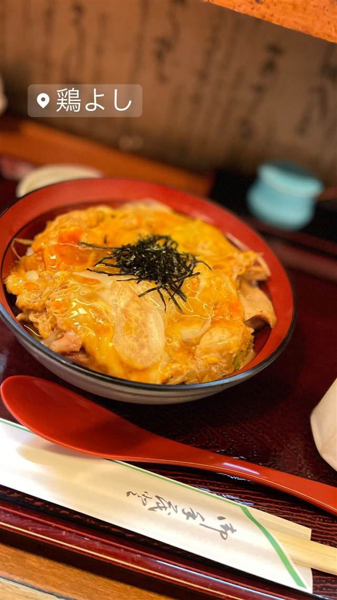
丼 田原町 浅草 鶏よし 箸ではなくスプーンで食べるとろとろ卵の親子丼 昼 ¥1,000～¥1,999 夜 ¥4,000～¥4,999 -
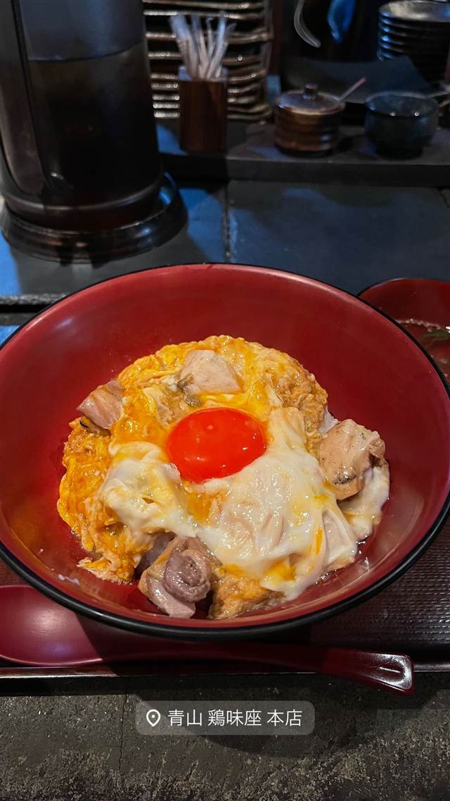
丼 表参道駅 青山 鶏味座 本店(とりみくら) 幻の東京軍鶏を備長炭で焼き、自家製出汁のふわとろ卵をのせた究極の親子丼 夜 ¥4,000～¥4,999 -
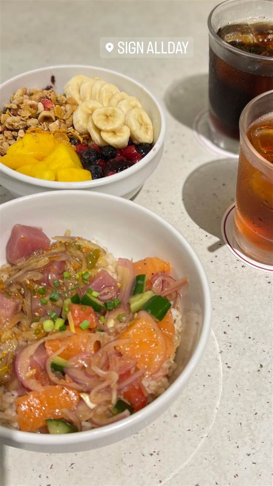
丼 代官山 SIGN ALLDAY(サイン オールデイ) 駅直結で朝から夜まで通し営業、アサイーボウルとポキ丼 昼 ¥1,000～¥1,999 夜 ¥2,000～¥2,999
おにぎり
-
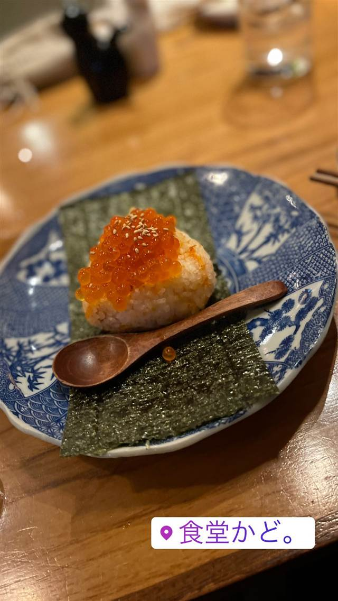
おにぎり 三軒茶屋駅 食堂かど。 新潟岩船産コシヒカリで握るいくらと焼き鮭の親子おにぎり 夜 ¥3,000～¥3,999 -
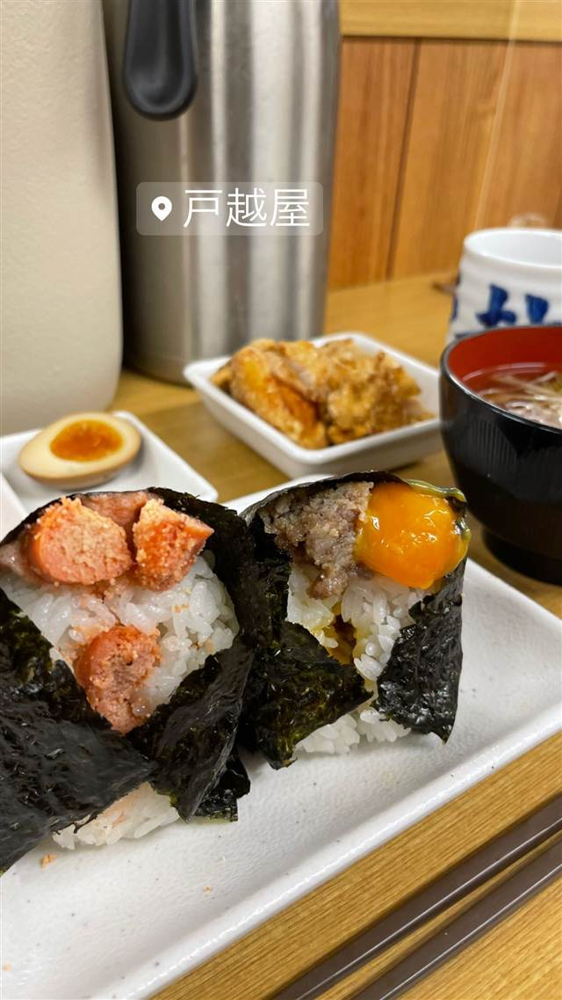
おにぎり 戸越銀座 おにぎり戸越屋 戸越銀座本店 常時約40種の具材からできたてで握るおにぎり 昼 ～¥999 夜 ～¥999 -
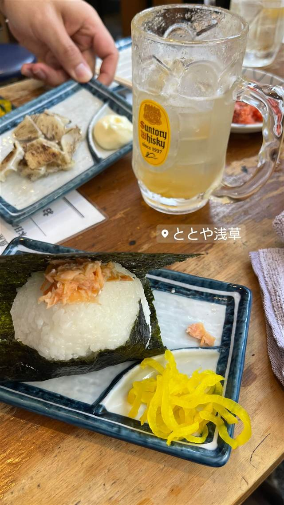
おにぎり 浅草（つくばEXP） 酒場 ととや 明治創業の豊洲仲卸直営、新鮮なまぐろかま焼き 昼 ¥1,000～¥1,999 夜 ¥2,000～¥2,999 -
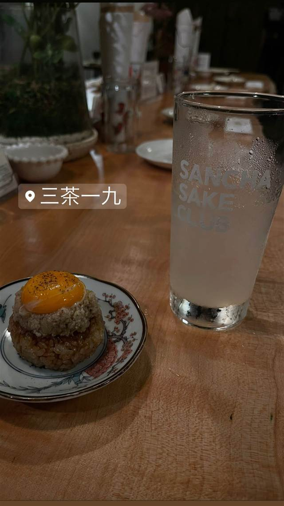
おにぎり 三軒茶屋 三茶一九 信玄鶏を一本ずつ手刺しし羅臼備長炭で焼く炭火焼き鳥 夜 ¥4,000～¥4,999 -
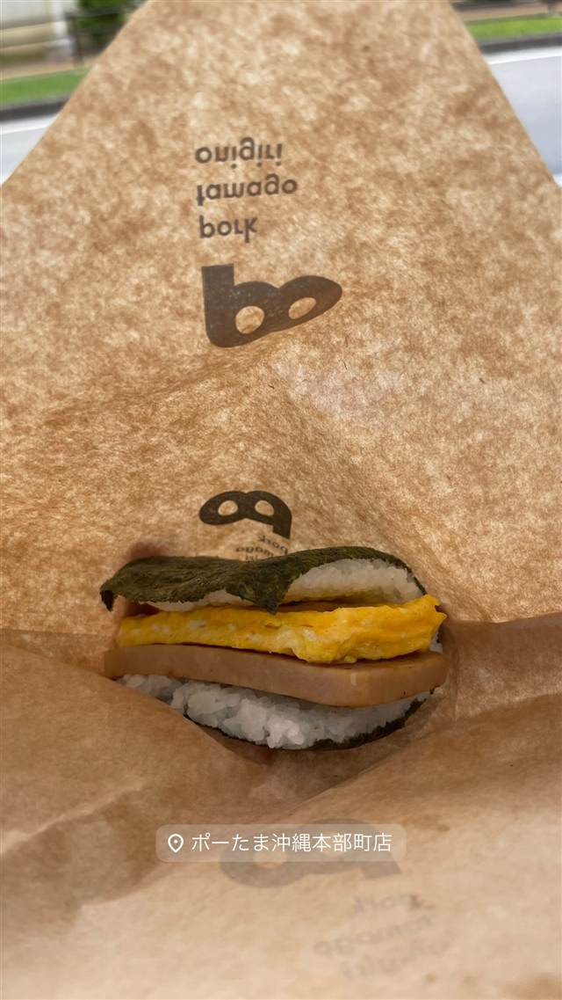
おにぎり なし ポーたま 沖縄本部町店 戦後の米軍統治期に広まったポーク玉子のおにぎり 昼 ～¥999